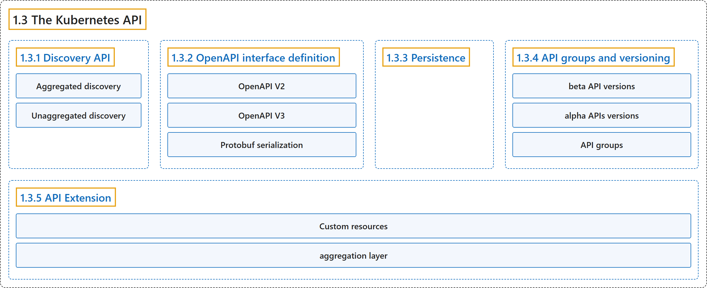

1.3 The Kubernetes API
Classification

Glossary
| Term | Definition | 中文翻译 | Source |
|---|---|---|---|
| 1.3 The Kubernetes API Kubernetes API |
"The Kubernetes API lets you query and manipulate the state of objects in Kubernetes." | Kubernetes API 让你查询和操作 Kubernetes 中对象的状态。 | The Kubernetes Authors, n.d., "The Kubernetes API", para. 1 |
| 1.3.1 Discovery API 发现 API |
"Kubernetes publishes a list of all group versions and resources supported via the Discovery API." | Kubernetes 发布所支持的全部组版本和资源的列表，途径是发现 API。 | The Kubernetes Authors, n.d., "Discovery API", para. 1 |
| Aggregated discovery 聚合发现 |
"Kubernetes offers stable support for aggregated discovery, publishing all resources supported by a cluster through two endpoints (/api and /apis)." |
Kubernetes 稳定支持聚合发现，发布集群支持的所有资源，通过两个端点（/api 和 /apis）。 |
The Kubernetes Authors, n.d., "Aggregated discovery", para. 2 |
| Unaggregated discovery 非聚合发现 |
"Without discovery aggregation, discovery is published in levels, with the root endpoints publishing discovery information for downstream documents." | 没有发现聚合时，发现信息分层发布，由根端点发布下游文档的发现信息。 | The Kubernetes Authors, n.d., "Unaggregated discovery", para. 1 |
| 1.3.2 OpenAPI interface definition OpenAPI 接口定义 |
(context) "Kubernetes serves both OpenAPI v2.0 and OpenAPI v3.0." | （语境）Kubernetes 提供两者：OpenAPI v2.0 和 OpenAPI v3.0。 | The Kubernetes Authors, n.d., "OpenAPI interface definition", para. 2 |
| OpenAPI V2 OpenAPI V2 |
"The Kubernetes API server serves an aggregated OpenAPI v2 spec via the /openapi/v2 endpoint." |
Kubernetes API 服务器提供聚合的 OpenAPI v2 规范，通过 /openapi/v2 端点。 |
The Kubernetes Authors, n.d., "OpenAPI V2", para. 1 |
| OpenAPI V3 OpenAPI V3 |
"Kubernetes supports publishing a description of its APIs as OpenAPI v3." | Kubernetes 支持发布其 API 的描述，格式为 OpenAPI v3。 | The Kubernetes Authors, n.d., "OpenAPI V3", para. 2 |
| Protobuf serialization Protobuf 序列化 |
"Kubernetes implements an alternative Protobuf based serialization format that is primarily intended for intra-cluster communication." | Kubernetes 实现了一种基于 Protobuf 的替代序列化格式，主要用于集群内部通信。 | The Kubernetes Authors, n.d., "Protobuf serialization", para. 1 |
| 1.3.3 Persistence 持久化 |
"Kubernetes stores the serialized state of objects by writing them into etcd." | Kubernetes 存储对象的序列化状态，方式是把它们写入 etcd。 | The Kubernetes Authors, n.d., "Persistence", para. 1 |
| 1.3.4 API groups and versioning API 组与版本 |
"To make it easier to eliminate fields or restructure resource representations, Kubernetes supports multiple API versions, each at a different API path, such as /api/v1 or /apis/rbac.authorization.k8s.io/v1alpha1." |
为了更容易删除字段或重构资源表示，Kubernetes 支持多个 API 版本，每个版本位于不同的 API 路径，例如 /api/v1 或 /apis/rbac.authorization.k8s.io/v1alpha1。 |
The Kubernetes Authors, n.d., "API groups and versioning", para. 1 |
| beta API versions beta API 版本 |
(context) "Additionally, Kubernetes maintains compatibility with data persisted via beta API versions of official Kubernetes APIs" | （语境）此外，Kubernetes 保持兼容性，对象是官方 Kubernetes API 中通过 beta API 版本持久化的数据 | The Kubernetes Authors, n.d., "API changes", para. 3 |
| alpha APIs versions alpha API 版本 |
(context) "Although Kubernetes also aims to maintain compatibility for alpha APIs versions, in some circumstances this is not possible." | （语境）尽管 Kubernetes 也力求为 alpha API 版本保持兼容，但在某些情况下做不到。 | The Kubernetes Authors, n.d., "Note:", para. 1 |
| API groups API 组 |
(context) "To make it easier to evolve and to extend its API, Kubernetes implements API groups that can be enabled or disabled." | （语境）为了更容易演进和扩展 API，Kubernetes 实现了 API 组，它们可以启用或禁用。 | The Kubernetes Authors, n.d., "API groups and versioning", para. 3 |
| 1.3.5 API Extension API 扩展 |
"The Kubernetes API can be extended in one of two ways:" | Kubernetes API 可以用两种方式之一来扩展： | The Kubernetes Authors, n.d., "API Extension", para. 1 |
| Custom resources 自定义资源 |
"Custom resources let you declaratively define how the API server should provide your chosen resource API." | 自定义资源让你声明式地定义一件事：API 服务器应如何提供你选择的资源 API。 | The Kubernetes Authors, n.d., "API Extension", para. 2 |
| aggregation layer 聚合层 |
(context) "You can also extend the Kubernetes API by implementing an aggregation layer." | （语境）你也可以扩展 Kubernetes API，方式是实现聚合层。 | The Kubernetes Authors, n.d., "API Extension", para. 3 |
References
The Kubernetes Authors. (n.d.). The Kubernetes API. Kubernetes Documentation. Retrieved October 31, 2026, from https://kubernetes.io/docs/concepts/overview/kubernetes-api/